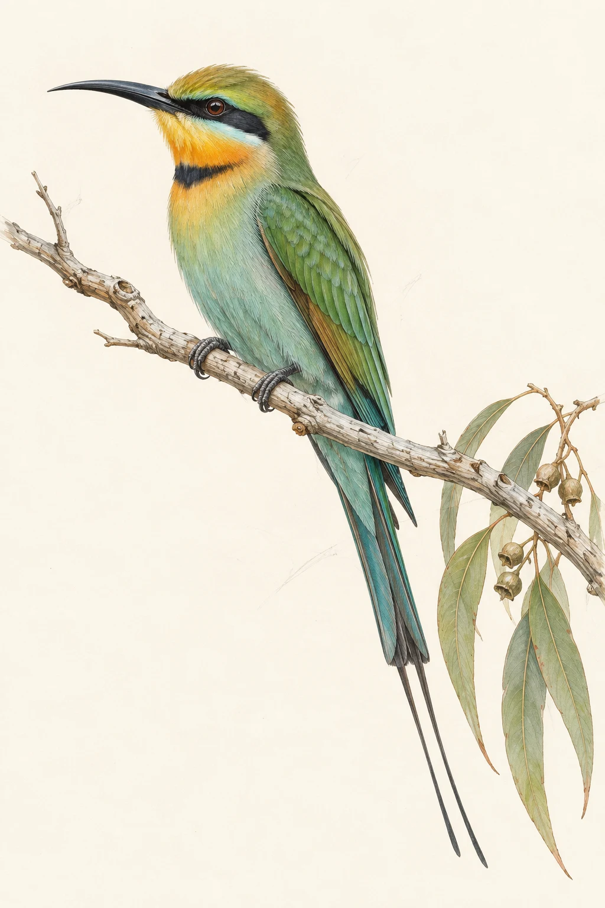

A visual field journal · 2024–2026
Australia,
through a
birdwatcher’s
eyes.
9.6 million sightings of 760 species.
One year, one continent, four seasons.
Where Australians record birds, how the records shift with the seasons, and what they cannot tell us.

AI-generated illustration · not an identification plateWAWestern AustraliaNTNorthern TerritorySASouth AustraliaQLDQueenslandNSWNew South WalesVICVictoriaTASTasmaniaACTAustralian Capital Territory (Canberra)
First, look at
where we look.
Half of all records come from 12 of 814 squares
2024Darker squares hold more records. Light up the fewest squares that hold a given share.
Per square kilometre, Canberra leads. Per resident, the Northern Territory does.
2024Honeyeaters lead the ten busiest bird families
2024eBird writes most
of the notebook.
86.8% of the records come from eBird. BirdLife’s Birdata supplies a quarter of South Australia’s records, more than anywhere else.
Each state’s records, traced back to their platform
2024Wider ribbons carry more records. Select a platform on the left to see its share of each state.
Turn the calendar.
The cast changes.
Every state keeps its own busy season
2024Each ring is a state, each slice a month. Teal: busier than that state’s average day. Brown: quieter.
The Welcome Swallow climbs the rankings as spring arrives
2024 · the seven most-recorded birdsEach line is one bird’s rank, month by month. Rank 1 has the most records.
One bird.
A summer south, a winter north.
In summer, 48.3% of bee-eater records lie south of 30°S. In winter, just 1.0% do.
Watch the bee-eater’s range slide north
2024Filled circles: the chosen season. Rings: the opposite season.
It heads north in April and returns in October
2024Each ridge is one month of bee-eater records. South is left, north is right.
All winter records lean north too, but nothing like the bee-eater’s
2024Teal places get a bigger share of winter records than of summer ones. Brown places, the reverse.
Some birds come and go. Others stay all year.
2024 · eight featured birdsEach cell compares a bird’s share of that month’s records with its share across the year. Teal: more than usual. Brown: less.
Often recorded
doesn’t mean safe.
Some threatened birds are logged thousands of times, others a handful
2024 recordsEach dot is one of 65 threatened species found in the records.
At sea and on the mudflats, up to a third of records are threatened birds
2024Spike height: threatened-bird records per 1,000 records in that square.
The busiest notebooks are not where the most threatened birds are listed
2024 · Aug 2026 list91 of 150 listed birds are shared between states
28 August 2026Joined dots mark an exact group of states; the bar counts the listed birds in that group.
Select a circle or a state code to light up the combinations that include it.
A newer page
can still be unfinished.
eBird’s recent records have not arrived yet, so the seasons above use 2024
2024–August 2026Green: the month has records. Grey: none in this download.
Year to year, most familiar birds barely move.
iNaturalist has both full years, so we compare each bird’s share of its records. Ten of fourteen shift by less than 5%, tiny beside the fourfold seasonal swings above. The Silvereye fell furthest.
Change in each bird’s share of iNaturalist records
2024 → 2025Green: gained share. Ochre: lost share.
Inside the notebook
Observation data
Atlas of Living Australia, hosting eBird Australia, BirdLife Australia’s Birdata and iNaturalist Australia. Downloaded 10 September 2026 as complete aggregate counts.
Observations marked present, with a valid location and a known month, in the eight states and territories, within 112–154°E and 44–10°S.
Conservation, people & geography
DCCEEW Threatened Species State Lists, 28 August 2026. ABS estimated resident population, June 2024.
Geoscience Australia land areas. Species context: BirdLife Australia rainbow bee-eater profile. Boundaries: Natural Earth 1:50m. Every map uses an equal-area projection, so areas compare fairly.
How to read the evidence
The same bird can be logged on more than one platform, and busy places are logged more often.
A threatened bird’s current listing says nothing about its numbers in 2024. Species whose names did not match exactly are left out.
Methods and limitations
9,575,922 records cover 760 named species; 217,108 more have no species name and count only in totals. Monthly shares divide a bird’s records by all records that month; the seasonal clock divides by days in the month and compares each state with its own average.
The seasonal contour map spreads each season’s 1° counts with a Gaussian kernel (σ = 1°), converts them to shares of that season’s national total, and contours the log ratio of winter to summer share on a 0.25° lattice, clipped to land. Places with too little smoothed evidence stay blank.
Threatened-species matching uses the DCCEEW scientific name at species level only: 65 species match with 2024 records. The spike map divides their records by all records in each 1° square and omits squares with fewer than 300 records. Kinds of bird follow family: albatrosses and petrels; shorebirds, terns, herons and painted-snipe; all others.
Density uses Geoscience Australia land area and ABS June 2024 residents. 1° squares shrink slightly towards the south, so the atlas shows counts, not density. The latitude profiles use 1° bins, so 30°S is approximate. The year-to-year chart includes every featured bird with at least 500 iNaturalist records in 2024.
Authorship & AI acknowledgement. A FIT3179 data visualisation by Wen-Shen Lum, Monash University Malaysia, September 2026. Research, data processing, writing and code were assisted by OpenAI Codex and Anthropic Claude. The bee-eater artwork was generated with OpenAI’s image tool and is decorative. All charts are original Vega and Vega-Lite specifications built on the cited data.
Typefaces: Literata, Bricolage Grotesque and Kalam, under the SIL Open Font License. Source data keep their original licences; see the query log and methodology.